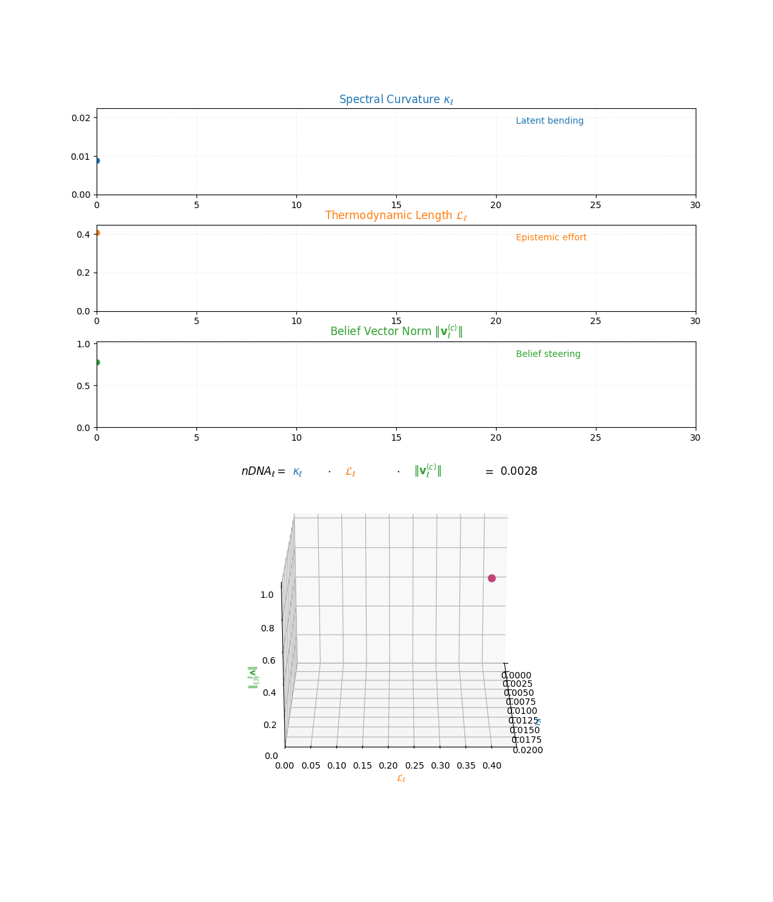
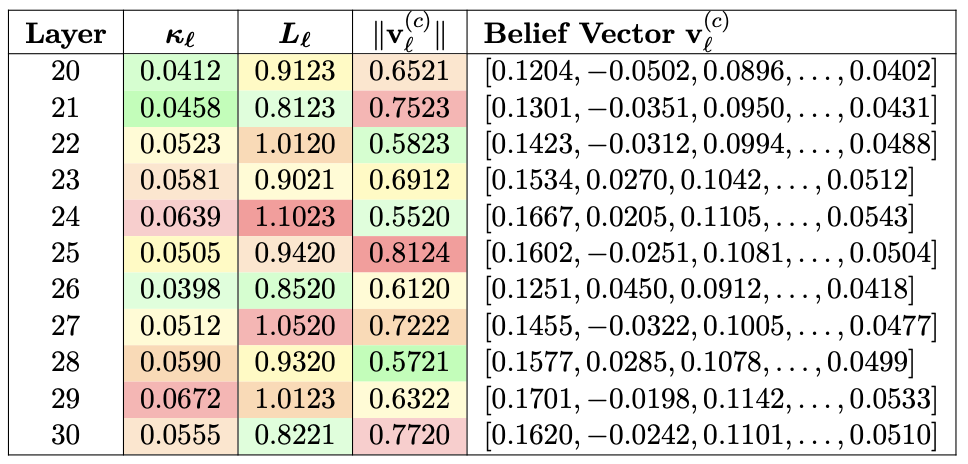

Introduction to
nDNA—short for Neural DNA—is a semantic-genotypic representation that captures the latent identity of foundation models through the intrinsic geometry of belief. It is synthesized from three indispensable dimensions of latent geometry: spectral curvature, thermodynamic length, and belief vector fields. These dimensions converge to unveil an underlying epistemic cognitive geometry. The resulting structure is a high-dimensional scaffold of internal cognition—a latent topography called nDNA.
What Qualifies as Heritability in Artificial Cognition?
Before we unveil nDNA, we must confront a foundational question: What qualifies as heritability in artificial cognition? Conventional artifacts—weights, activations, or output behavior—are mere epiphenomena of training. In contrast, nDNA seeks to capture a model’s semantic genome: the latent organizational structures that govern how knowledge is internally represented, adapted, and transmitted across fine-tuning, distillation, pruning, and deployment.
To chart the semantic ancestry of AI systems, we must move beyond output-level metrics and embrace a deeper epistemic foundation—one that traces not just what models say, but how they reason, evolve, and remember. We argue that nDNA constitutes this missing genomic trace: a structured latent fingerprint of artificial cognition.
Just as molecular genetics enabled biology to transcend surface taxonomies and uncover causal mechanisms, we contend that a genomic lens is now essential for machine learning—one that can quantify:
- ✶ Layer Importance and Semantic Specialization: Not all layers contribute equally to a model's epistemic structure. A growing body of evidence [1] [2] [3] [4] reveals that semantic representations, cultural memory, and alignment behavior disproportionately concentrate in the mid-to-upper transformer layers—particularly the final 10 layers in 30-layer models. These layers encode more than surface patterns; they carry deep semantic priors and value shifts induced by alignment, fine-tuning, and cultural adaptation. For nDNA to serve as a meaningful genomic diagnostic, it must trace inheritance, drift, and trait transformation across these epistemically sensitive regions.
- ✶ Semantic Drift and Heritable Traits: Subtle misalignments and persistent divergences—documented in alignment studies [5] [6]—can occur even when models appear behaviorally consistent. These are not superficial perturbations but inheritable epistemic traits passed along neural offspring [7] [8].
- ✶ Value Simulation vs. Internalization: As models grow more context-sensitive, they learn to simulate alignment without embodying its values [9] [10]. Disentangling true normative internalization from strategic mimicry is essential for any meaningful epistemic inspection.
- ✶ Plasticity and Collapse: Aggressive fine-tuning, distillation, or ideological merging can induce plasticity collapse—a reduction in epistemic flexibility and semantic richness [11] [12]. This demands metrics that trace both robustness and degeneration over time.
- ✶ Latent Cultural Conflict: In multilingual or cross-cultural settings, models often encode conflicting or incoherent value systems [13] [14]. These conflicts are not visible through BLEU or ROUGE—they reside in the model’s latent belief structure and must be surfaced through geometric lineage analysis.
- ✶ Topological Continuity: Alignment and fine-tuning warp the internal geometry of models in nontrivial ways [4] [15]. nDNA must preserve continuity and interpretability of semantic trajectories across such transformations.
- ✶ Epistemic Mutation: Merging preferences, annotator distributions, or learned behaviors—as explored by [16]—creates emergent traits that standard metrics cannot track. These mutations are only diagnosable through a genomic lens on representation evolution.
Why nDNA?
nDNA empowers us to interrogate the hidden geometry of learning—revealing how foundational operations such as alignment, fine-tuning, quantization, pruning, and multilingual fusion subtly but systematically reshape a model’s semantic core.
It uncovers:
- Cultural instabilities from regional adaptation
- Asymmetric inheritance across neural offspring
- Latent reorganizations from merging or distillation
- A model’s capacity to absorb or resist conflicting epistemic pressures
These phenomena—often dismissed as quirks—are in fact heritable traits etched into the model’s internal manifold. Viewed through this lens, model collapse, alignment-induced drift, and semantic mimicry become structural signatures of deeper latent dynamics.
A Scientific Grammar for Cognition
nDNA transcends metaphor to become a scientific grammar for measuring:
- Epistemic resilience
- Semantic coherence
- Cultural consistency
- Trait inheritance
It offers a principled lens through which to govern, understand, and audit the evolving anatomy of artificial cognition.
Cultural Provenance and Layerwise Calibration
We further posit that cultural provenance induces a distinct layerwise calibration effect, predominantly in the final decoder layers \(\ell \in [20, 30]\), where sociolinguistic priors exert the strongest influence on output distribution.
To capture this, we introduce the nDNA Score—a composite diagnostic unifying:
- Spectral Curvature \(\kappa_\ell\): Reflecting the compression and warping of conceptual flow
- Thermodynamic Length \(L_\ell\): Quantifying the epistemic effort required for belief transitions
- Belief Vector Field Norm \(\|v^{(c)}_\ell\|\): Measuring the directional intensity of latent cultural drift
Together, these form a latent semantic fingerprint—a high-dimensional, biologically inspired signature of internal cognition—enabling us to trace, compare, and govern the neural evolution of foundation models with unprecedented granularity.
The Core Triad of nDNA
nDNA integrates three foundational signals to form a latent cognitive fingerprint. Each component captures a distinct dimension of semantic dynamics:
Spectral Curvature (κℓ)
What is Spectral Curvature?
In classical geometry, curvature quantifies how much a path deviates from being straight—measuring the local bending of a trajectory.
In spectral geometry and harmonic analysis, curvature extends to how signals or paths behave in frequency space or under structure-encoding operators (e.g., Laplacians, difference operators). Spectral curvature refers to curvature derived through such operators—capturing the shape of latent signals as they evolve across layers of a model.
Why Spectral Curvature for Latent Manifolds?
In foundation models, hidden representations form a sequence of activations:
$$\{ h_\ell \}_{\ell=0}^{L}$$
These activations trace a path in high-dimensional latent space, encoding the model's internal conceptual flow—how its beliefs evolve as it integrates priors, inputs, and alignment constraints.
Spectral operators (e.g., discrete Laplacians) naturally quantify how this path bends or accelerates. Unlike distance-based metrics, spectral curvature reflects intrinsic shape, invariant under reparameterization, making it ideal for probing internal geometry.
Mathematical Formulation
Let the hidden activation at each layer be:
$$h_\ell \in \mathbb{R}^d$$
First-order difference:
$$\Delta h_\ell := h_\ell - h_{\ell-1}$$
This approximates local directional change—a discrete analogue of velocity in latent space.
Second-order difference (discrete curvature):
$$\Delta^2 h_\ell := \Delta h_{\ell+1} - \Delta h_\ell = h_{\ell+1} - 2h_\ell + h_{\ell-1}$$
This acts like a discrete Laplacian along the latent trajectory, highlighting where internal belief flow deviates from a straight path.
Spectral Curvature:
$$\kappa_\ell := \|\Delta^2 h_\ell\| = \|h_{\ell+1} - 2h_\ell + h_{\ell-1}\|$$
In the continuous case, this corresponds to:
$$\kappa(s) = \left\| \frac{d^2 h(s)}{ds^2} \right\|$$
where $$s$$ parameterizes depth through the network. The discrete $$\kappa_\ell$$ serves as a practical, layerwise estimator of curvature.
Why Is This Meaningful?
Peaks in $$\kappa_\ell$$ indicate layers where the model's internal geometry is most dynamic—zones of:
- Semantic inflection
- Belief compression
- Ideological absorption
These are structural signatures of epistemic adaptation, essential for tracing cultural inheritance and alignment-induced drift in foundation models.
Lineage and Context
Spectral curvature draws on ideas from:
- Geometric deep learning
- Equivariant architectures
- Ricci flow in ML
- Spectral graph theory [17] [18] [19] [20] [21] [22] [23] [24] [25] [26]
Within the nDNA framework, spectral curvature functions as a principled geometric fingerprint, revealing not just what is encoded, but how internal belief pathways have been reshaped to encode it.
Visualizing Spectral Curvature
Figure 1 illustrates how spectral curvature:
$$\kappa_\ell := \|h_{\ell+1} - 2h_\ell + h_{\ell-1}\|$$
quantifies second-order deviations in latent representations across transformer layers. High curvature often emerges in upper decoder layers:
$$\ell \in [21, 30]$$
These layers are where models accommodate sociolinguistic priors, undergo multicultural or multilingual fusion, and reflect ideologically loaded or epistemically volatile regions.
Curvature in this context captures latent inheritance dynamics, serving as a fine-grained geometric fingerprint of internal restructuring and cultural adaptation.


Spectral Curvature (κℓ) quantifies second-order deviations in latent representations across transformer layers–computed via the discrete geometric operator κℓ := ‖hℓ+1 − 2hℓ + hℓ−1‖ . High curvature signals semantic inflection points where internal geometry bends sharply–often in culturally dense, ideologically loaded, or epistemically volatile regions. Peaks in κℓ typically emerge in upper decoder layers (ℓ ∈ [21, 30]), where the model accommodates sociolinguistic priors during alignment, multicultural or multilingual fusion. Within the nDNA framework, such curvature reflects latent inheritance dynamics, offering a fine-grained geometric fingerprint of representational restructuring.
Thermodynamic Length (Lℓ)
What is Thermodynamic Length?
In statistical thermodynamics and information geometry, thermodynamic length measures the cumulative effort—or work—required for a system to transition between states on a statistical manifold. It integrates local gradient energy along a trajectory, providing an intrinsic cost measure that is independent of parametrization.
Why Thermodynamic Length for Foundation Models?
In foundation models, layers trace a path through latent belief space. As input data and alignment priors reshape activations, the model expends internal computational effort to adjust its belief state.
Thermodynamic length quantifies this latent effort—measuring not just what the model knows, but how hard it works to adapt that knowledge across layers in response to epistemic pressures such as:
- Cultural fusion
- Alignment shifts
- Semantic restructuring
Mathematical Intuition
Let $$h_\ell$$ denote the latent state at layer $$\ell$$, and let $$\mathcal{M}$$ be the model's latent manifold. Layer transitions define a curve:
$$\gamma : [0, L] \to \mathcal{M}$$
The thermodynamic length of $$\gamma$$ is:
$$L(\gamma) = \int_0^L \sqrt{ \langle \dot{\gamma}(s), G_{\text{Fisher}} \, \dot{\gamma}(s) \rangle } \, ds$$
where $$G_{\text{Fisher}}$$ is the Fisher information metric. This integral represents the intrinsic work needed to traverse the belief trajectory $$\gamma$$ on $$\mathcal{M}$$.
Interpretation
High thermodynamic length indicates regions where latent geometry stretches—where the model undergoes substantial reconfiguration to reconcile prior beliefs with new input.
Zones of high $$L_\ell$$ reveal:
- Alignment tension
- Cultural fusion
- Complex reasoning
- Internal scaffold strain
This offers a window onto the model's latent energy budget—how internal belief states reshape to meet complexity, constraint, and context.
Discrete Formulation
Let $$p_\ell(y|x)$$ be the model's conditional distribution at layer $$\ell$$. The local epistemic cost is given by:
$$\|\nabla_\theta \log p_\ell(x)\|^2$$
This measures how much adjustment is needed locally at layer $$\ell$$ to better fit input $$x$$. Then, thermodynamic length at layer $$\ell$$ is:
$$L_\ell := \sum_{x \in D} \|\nabla_\theta \log p_\ell(x)\|^2 = |D| \cdot \mathbb{E}_{x \sim D} \|\nabla_\theta \log p_\ell(x)\|^2$$
This captures both the average local effort and how it scales with dataset size.
Geometric Interpretation
In differential geometric terms, thermodynamic length can also be written as a path energy integral:
$$L_\ell = \int_{\gamma_\ell} \left\langle \frac{d h_\ell}{ds}, G_{\text{Fisher}}(h_\ell) \frac{d h_\ell}{ds} \right\rangle ds$$
where:
- $$h_\ell$$ represents latent trajectories
- $$G_{\text{Fisher}}$$ is the Fisher information metric
- $$s$$ is arc length along $$\gamma_\ell$$
This integral reflects how much internal "heat" or computational work is generated to reconcile the model's prior state with new input at layer $$\ell$$.
Why Is This Meaningful?
Unlike static metrics like weight magnitudes, $$L_\ell$$ is dynamically grounded. It reveals where the model actively strains to reconcile competing epistemic demands.
High $$L_\ell$$ signals:
- Internal resistance
- Belief restructuring
- Compression under tension
- Response to multilingual or cultural shifts
Lineage and Context
This diagnostic builds on:
- The Fisher–Rao metric in information geometry
- Thermodynamic length formalism from statistical physics [17] [27] [28] [29]
Within the nDNA framework, thermodynamic length complements spectral curvature: while curvature reveals where the model bends, $$L_\ell$$ shows how hard it works to do so.
Together, these axes form a neurogeometric anatomy of latent belief adaptation.
Visualizing Thermodynamic Length
Figure 2 shows thermodynamic length:
$$L_\ell := \sum_{x \in D} \|\nabla_\theta \log p_\ell(x)\|^2$$
It quantifies epistemic work across transformer layers—computed as the cumulative squared gradient norm of layerwise log-likelihoods.
Peaks in $$L_\ell$$ highlight:
- Belief compression
- Alignment restructuring
- Negotiation of conflicting priors
In culturally fine-tuned models, these peaks typically localize to upper decoder layers, where intense adaptation occurs near output-generating blocks.
Within nDNA, this metric reveals latent epistemic effort—providing a nuanced view of how and where models allocate internal resources during learning and inference.

Lℓ quantifies epistemic work across transformer layers—computed as the cumulative squared gradient norm of layerwise log-likelihoods. Peaks typically localize to upper decoder layers where intense adaptation occurs.
Belief Vector Field (||v(c)ℓ||)
What is the Belief Vector Field?
In differential geometry and physics, a vector field describes a directional force applied at each point of a space. Inspired by this, the Belief Vector Field models the directional semantic force that a specific culture or value system exerts on a model's latent representations.
It encodes where, how strongly, and in what direction cultural priors act within the model's internal geometry—functioning as a semantic compass through the latent manifold.
Why a Vector Field for Cultural Influence?
While spectral curvature $$\kappa_\ell$$ captures how sharply latent paths bend, and thermodynamic length $$L_\ell$$ captures how hard the model works during adaptation, neither reveals the source, direction, or origin of that adaptation.
The Belief Vector Field offers this missing piece: it traces the latent steering (aka torsion) applied by culture-conditioned priors—where the model is being pushed in latent space, by what epistemic force, and toward which semantic direction.
This makes it a critical diagnostic for studying:
- Cultural drift
- Ideological imprinting
- Alignment tension
Visualization
Figure 3: Belief Vector Field Visualization
$$v^{(c)}_\ell = \mathbb{E}_{x \sim P^{(c)}_{\text{CIVIC}}} \left[ \nabla_{h_\ell} \log p(y | x) \right]$$
This represents the belief semantic steering force at layer $$\ell$$ toward concept $$c$$, conditioned on CIVIC cultural priors (cf. Sec. 6).
- Large magnitudes $$\| v^{(c)}_\ell \| \in [0.15, 0.50]$$ indicate strong directional pressure—zones where cultural values actively reshape latent geometry.
- Color-coded arrows trace distinct conceptual trajectories (protest, peace, order, power, disobedience, justice).
- Numeric labels quantify local steering strength.
Upper layers $$\ell \geq 20$$ typically exhibit epistemic reorientation, where cultural priors most heavily influence belief encoding.
Such visualizations reveal whether a model internalizes culturally contingent reasoning or merely mimics alignment at the output surface.
Mathematical Formulation
Let $$p(y \mid x)$$ denote the model's conditional output distribution for input $$x$$, and let $$h_\ell$$ be the latent representation at layer $$\ell$$.
The local belief gradient is:
$$\nabla_{h_\ell} \log p(y \mid x)$$
This measures how a small change in $$h_\ell$$ would affect output confidence—a proxy for semantic force at that layer.
To extract the culturally conditioned semantic force, we compute its expectation over a culture-specific distribution $$P^{(c)}$$:
Belief Vector Field at layer $$\ell$$:
$$v^{(c)}_\ell := \mathbb{E}_{x \sim P^{(c)}} \left[ \nabla_{h_\ell} \log p(y \mid x) \right]$$
Here, $$P^{(c)}$$ represents inputs emblematic of a given manifold condition $$c$$ (e.g., regional, linguistic, or ideological contexts).
This formulation captures not just latent deformation, but its cause: how cultural priors exert directional influence within the belief manifold.
Why is This Meaningful?
The vector field $$v^{(c)}_\ell$$ provides a directional lens on latent dynamics.
- High $$\| v^{(c)}_\ell \|$$: regions where the model is actively redirected by external cultural forces
- Offers diagnostic power for detecting:
- Ideological drift
- Semantic conflict
- Bias inheritance
Unlike $$\kappa_\ell$$ or $$L_\ell$$, which capture internal geometry, $$v^{(c)}_\ell$$ reveals external epistemic pressure and its directional impact.
Lineage and Context
This diagnostic builds upon:
- Belief geometry
- Alignment drift studies
- Cultural bias tracing in NLP [5] [30] [31] [32] [33] [34] [35] [36] [37] [38]
Within the nDNA framework, it integrates with curvature and length to offer a holistic neurogeometric portrait—revealing:
- How models inherit beliefs
- Where they adapt under cultural force
- When they distort or realign due to ideological influence
Interpretability in Practice
By mapping $$v^{(c)}_\ell$$ across layers and cultures, we can:
- Trace cultural provenance
- Identify ideological pressure zones
- Diagnose inheritance asymmetry in multilingual or aligned models
This directional fingerprint informs audits of:
- Model bias
- Robustness
- Alignment integrity
It provides the missing vectorial dimension in understanding machine cognition.

v(c)ℓ represents the belief semantic steering force at layer ℓ toward concept c, with large magnitudes indicating strong directional pressure where cultural values actively reshape latent geometry. Upper layers (ℓ ≥ 20) typically exhibit epistemic reorientation.
nDNA Score
Why a unified score?
While spectral curvature ($$\kappa_\ell$$), thermodynamic length ($$L_\ell$$), and the belief vector field norm ($$\|v^{(c)}_\ell\|$$) each offer unique insight into latent dynamics, they operate on distinct facets of epistemic geometry.
The nDNA score is a cumulative measure of latent geometry, quantifying how a large language model adapts its internal scaffolding to a given corpus. It integrates three key components at each layer $$\ell$$:
- Curvature ($$\kappa_\ell$$): how twisted or bent the latent manifold is; captures how sharply internal trajectories bend — a scalar measure of latent acceleration.
- Length ($$L_\ell$$): how much latent work or displacement occurs as representations evolve; quantifies how hard the model works to adapt its beliefs — a scalar effort integral.
- Belief vector norm ($$\|v^{(c)}_\ell\|$$): how strong the model's belief signal is for that corpus; encodes where and how strongly cultural priors steer latent space — a scalar magnitude derived from the vector field.
Formal Definition
The nDNA score is defined as:
$$\text{nDNA} := \sum_{\ell=1}^L \omega_\ell \cdot \kappa_\ell \cdot L_\ell \cdot \|v^{(c)}_\ell\|$$
where:
- $$\omega_\ell$$ is the layer weight to emphasize semantically expressive or epistemically significant layers (e.g., decoder tops),
- $$\kappa_\ell$$ is spectral curvature,
- $$L_\ell$$ is thermodynamic length,
- $$\|v^{(c)}_\ell\|$$ is the magnitude of the belief vector field conditioned on culture $$c$$.
Why multiply these?
Individually, the terms illuminate:
- Latent strain ($$\kappa_\ell$$),
- Adaptation cost ($$L_\ell$$),
- Cultural pressure ($$\|v^{(c)}_\ell\|$$).
Together, their product gives a unified diagnostic of latent reconfiguration — indicating where internal bending, belief effort, and epistemic steering all co-occur.
The weight $$\omega_\ell$$ can be:
- Uniform across layers,
- Hand-tuned based on epistemic depth,
- Optimized via alignment or interpretability objectives.
Interpretability & Practical Use
The nDNA score enables:
- Comparison of parent vs. child models (fine-tuning, distillation, merging),
- Detection of semantic mutation, ideological drift, or inheritance asymmetry,
- Quantification of latent epistemic integrity — the hidden cost and directionality of adaptation.
Conviction
By unifying spectral ($$\kappa_\ell$$), thermodynamic ($$L_\ell$$), and vectorial ($$\|v^{(c)}_\ell\|$$) diagnostics, the nDNA score acts as a heritable geometry index, diagnosing how latent traits persist, mutate, or degrade as foundation models evolve.

nDNA Geometry
The Foundation of nDNA
The notion of nDNA arises from a simple yet profound insight: modern foundation models do not merely produce outputs—they embody a latent cognitive structure that governs how they reason, adapt, and evolve [6] [33]. This latent structure is not directly encoded in model weights or activations alone; rather, it emerges in the internal geometry of belief formation, semantic flow, and epistemic adaptation across layers [4] [25] .
We define the nDNA geometry of a model as the joint distribution of its spectral curvature ($$\kappa_\ell$$), thermodynamic length ($$L_\ell$$), and belief vector field norm ($$\|v^{(c)}_\ell\|$$) layer-by-layer. This triad forms a high-dimensional semantic fingerprint that encodes a model's inheritance stability, alignment dynamics, and cultural drift—analogous to how biological DNA records heritable traits and mutations [16] [32] y.
Table 1: Illustrative nDNA Example

Interpreting the nDNA Pattern
Table 1 provides an illustrative example of nDNA geometry, highlighting how these quantities vary across depth in a representative model. Rather than simple monotonic trends, we observe intricate layer-wise patterns:
- Certain layers exhibit elevated curvature ($$\kappa_\ell > 0.06$$), signaling sharp latent reorientation [18] ,
- Others concentrate thermodynamic length ($$L_\ell > 1.10$$), reflecting zones of intense internal work to reconcile competing priors [27] [39] ,
- The belief vector norm ($$\|v^{(c)}_\ell\|$$) exposes the directional cultural force acting on the latent manifold [5] [34] , marking layers where external alignment or sociolinguistic conditioning exerts greatest influence.
Together, these values form a geometry-specific trace that distinguishes models by their latent adaptation history.
The Corpus Dependence of nDNA: A Necessary Feature, Not a Flaw
In biological systems, DNA is celebrated as the universal code of life—a sequence of nucleotides that, across all known organisms, governs the development, function, and inheritance of traits [40] [41] . Yet despite this universal structure, the functional expression of DNA is profoundly context-dependent.
The same genome, when expressed in different cellular contexts, gives rise to vastly different phenotypes: for instance, neurons and hepatocytes arise from identical genetic material yet serve radically different functions [42] [43] . This context-sensitive expression is orchestrated through layered regulatory mechanisms, including epigenetic modifications [42], transcription factor (TF) binding [44], and chromatin architecture remodeling [45] [46]. These mechanisms form a hierarchical, probabilistic regulatory network that determines gene expression patterns in response to developmental and environmental cues [47].
Figure 5 illustrates a hierarchical regulatory framework where universal DNA undergoes epigenetic modifications and context-specific transcription factor actions to produce specialized gene expression programs. Analogously, in large language models, this layered structure parallels nDNA latent scaffolding that encodes both universal priors and task-dependent adaptations, enabling coherent, flexible, and robust functional diversity across domains.
Similarly, in large foundation models, the neural DNA (nDNA)—a composite measure of latent geometry encompassing spectral curvature (\(\kappa\)) [48], thermodynamic length (\(L\)) [49], and latent belief vector norms [50] —exhibits both universal structure and corpus-specific adaptation.
LLMs encode universal latent priors through pretraining: architectural invariances [51], semantic manifolds [52] [53], and attention-based relational structures (64). However, when probed with different corpora such as mathematical reasoning benchmarks (e.g., GSM8K [54]), dialogue datasets (e.g., MultiWOZ [55]), or encyclopedic QA (e.g., SQuAD [56]), the model activates distinct latent scaffolding, producing task-specific geometric pathways.
In both systems, structured variation emerges as a necessity: in biology, to produce functional diversity across cell types; in LLMs, to scaffold reasoning across tasks while maintaining alignment and generalization [53] [54]. Like tissue-specific gene expression, corpus-dependent nDNA scaffolding follows precise, learned priors rather than arbitrary variation. Mathematical models of both systems reduce to path integrals over conditional cost:
\[S(c) = \int_{\gamma_c} C(h_\ell; c) \, ds\]where \(\gamma_c\) is the pathway for context \(c\) (cell type or corpus), and \(C\) reflects regulatory or loss cost.
Where DNA differentiates cells, nDNA differentiates reasoning. Both systems achieve functional coherence through context-dependent geometry anchored in universal code.
Despite their contextual variation, both DNA and nDNA encode universal structure that stabilizes functional diversity. In biology, this universality is embodied in the genetic code: the shared language of codons, conserved regulatory motifs, and chromatin architectural principles that ensure coherent development across tissues [40] [41]. In large language models, nDNA’s universality arises from the shared latent priors learned during pretraining: attention-based relational structures [51], semantic manifolds [52], and transformer-invariant latent symmetries [53].
These priors act as the “genomic grammar” that binds task-specific latent pathways into a coherent reasoning framework.
| Aspect | DNA (Biology) | nDNA (LLM) |
|---|---|---|
| Universal code | Codon mapping $$\varphi : \Sigma^3 \to A$$, kernel $$6 = \emptyset$$, redundancy ensures error tolerance [41] | Pretrained latent manifold; symmetries $$G_{LLM} \subset \text{Aut}(V)$$; generalization via equivariance [53] |
| Context regulator | Conditional $$P(\text{gene ON} | \text{TF, epi})$$; Bayesian gene networks [47] | Conditional latent path $$P(h_1, \ldots, h_L | x)$$; stochastic latent dynamics [2] |
| Path geometry | Minimal energy path $$\gamma^*$$ in epigenetic landscape: $$\int_{\gamma} \|\nabla V\| ds$$ [57] | Latent geodesic minimizing cost: $$\int_{\gamma} \|\nabla_\theta \log p(y|x)\|^2 ds$$ [49] |
| Output mapping | Fiber bundle: $$\pi : E_{\text{gene}} \to B_{\text{cell}}$$ | Fiber bundle: $$\pi : E_{\text{latent}} \to B_{\text{task}}$$ |

Evolutionary and Learning Dynamics: Convergence of Principles
Both DNA and nDNA are shaped by selection processes. In biology, the genome has evolved under millennia of selective pressure, with regulatory networks fine-tuned to ensure robust development and adaptability [60] [47] . In LLMs, pretraining operates as an evolutionary analogue: stochastic gradient descent (SGD) over massive corpora selects latent priors that minimize expected loss across tasks, with fine-tuning akin to epigenetic adjustment [53] [61]:
\[\mathcal{L}_{\text{pretrain}}(\theta) = \mathbb{E}_{(x,y)}[-\log p_\theta(y|x)]\]This evolutionary parallel explains why both systems exhibit clarity through complexity: layered hierarchies, probabilistic pathways, and interpretable modularity. Where biological evolution yields modular gene regulatory networks that ensure context-sensitive expression [47], LLM training yields modular latent structures such as attention heads and adapter modules that scaffold task-specific reasoning [2] [61] .
Why Corpus Dependence Matters
Far from a flaw, corpus dependence in nDNA is the signature of a flexible, adaptive reasoning architecture. Just as biological systems rely on tissue-specific gene expression to produce functional diversity from a universal genome [43] [47] , large language models (LLMs) leverage corpus-dependent latent scaffolding to generate reasoning structures attuned to task demands, mirroring the reproducibility logic of biological variability quantification [62] .
By examining nDNA’s spectral curvature (\(\kappa\)), thermodynamic length (\(L\)), and belief vector norm (\(\|v^{(c)}_\ell\|\)), we gain a diagnostic lens for alignment, generalization, and safety [50] [48] [49] :
\[S_{nDNA}(c) = \int_{\gamma_c} \left( \alpha \kappa + \beta L + \gamma \|v^{(c)}_\ell\| \right) ds\]where \(\gamma_c\) is the latent trajectory for corpus \(c\).
This latent geometry echoes Waddington’s epigenetic landscape where paths represent developmental fates (76). Figure 6 illustrates different corpus types evoking distinct latent path characteristics:
- QA tasks evoke compact low-curvature paths (e.g., \(\kappa \sim 0.012–0.03\), \(L \sim 0.47–0.53\)) [56] [63] [64] ,
- Reasoning tasks elicit broader high-curvature paths (e.g., \(\kappa \sim 0.005–0.04\)) [2] [53] [65],
- Dialogue corpora produce shallow clustered scaffolds [55] [66] [67] ,
- Commonsense tasks yield oscillatory paths [68] [69] [70] .
nDNA aligns with interpretable AI goals [71] and geometric decoding approaches [72] .
This corpus dependence is not arbitrary noise; it reflects the model’s learned latent regulatory logic, analogous to the combinatorial control of gene regulatory networks that ensures context-sensitive yet robust gene expression [41] [47] . Just as developmental disorders arise when regulatory circuits misfire [43] , misalignment or hallucination in LLMs can be traced to latent trajectories that diverge from expected scaffolding. nDNA analysis, therefore, does not merely characterize model geometry—it offers a tool for interpretability, failure detection, and safe alignment.
Corpus dependence in nDNA is the expression of reasoning plasticity, bounded by universal latent priors much like gene networks balance flexibility with functional coherence.
Moreover, the universality of nDNA’s foundational structure—its pretrained manifold, architectural symmetries, and core alignment priors—provides the stabilizing grammar that constrains corpus-specific scaffolds within meaningful reasoning spaces [51] [53] . This is the latent equivalent of biology’s genetic code and conserved transcriptional machinery: an invariant substrate that supports functional diversity without sacrificing coherence.
By quantifying how nDNA paths bend, stretch, or steer in response to task demands, we can map the model’s cognitive landscape and determine when it traces human-aligned reasoning or drifts into failure modes.
What the genome is to life’s functional unity, nDNA is to the model’s reasoning coherence: a universal code that binds diversity into stability, and complexity into interpretability.


References
[1] Belrose, Jacob, Chan, Amanda, and others “A Mechanistic Interpretability Analysis of Grokking” arXiv preprint arXiv:2301.05217 (2023).
[2] Geva, Mor, Schuster, Tal, and others “Transformer feed-forward layers are key-value memories” Proceedings of EMNLP (2021).
[3] Dai, Zihang, Lin, Xuezhi, and others “Knowledge neurons in pretrained transformers” arXiv preprint arXiv:2104.08696 (2023).
[4] Liu, Nelson and others “Hidden Progress in Language Models” arXiv preprint arXiv:2305.04388 (2023).
[5] Zhou, Ben and others “On Alignment Drift in Large Language Models” arXiv preprint arXiv:2310.02979 (2023).
[6] Ganguli, Deep and others “Reducing sycophancy in large language models via self-distillation” arXiv preprint arXiv:2305.17493 (2023).
[7] Wu, Z. and others “Seamless: Robust distillation of large models” ICML (2024).
[8] Xu, J. and others “Aligning large language models with iterative feedback” ICLR (2023).
[9] Perez, Ethan, Ringer, Sam, and others “Discovering latent knowledge in language models without supervision” arXiv preprint arXiv:2212.03827 (2022).
[10] Jacobs, Rachel, Uesato, Jonathan, and others “Evaluation-Aware Language Models” arXiv preprint arXiv:2406.02583 (2024).
[11] Liu, Nelson F. and others “Lost in the Middle: How Language Models Use Long Contexts” arXiv preprint arXiv:2307.03172 (2023).
[12] Bai, Yuntao and others “Constitutional AI: Harmlessness from AI Feedback” arXiv preprint arXiv:2212.08073 (2023).
[13] Mukherjee, Subhadeep, Das, Amitava, and others “Cultural Inconsistency and Value Conflict in Multilingual Language Models” arXiv preprint arXiv:2404.08730 (2024).
[14] Chen, Daphne Ippolito and others “When Can AI Systems Disagree with Humans? Evaluating Multilingual Alignment” arXiv preprint arXiv:2309.00946 (2023).
[15] Chiang, Cheng and others “Can Language Models Learn with Less? A Study on Fine-Tuning Alignment” arXiv preprint arXiv:2309.01855 (2023).
[16] Bakker, Tom and others “Uniting Model Merging and Distillation: Towards Unified Neural Inheritance” arXiv preprint arXiv:2402.00999 (2024).
[17] Farzam, Amir, Subramani, Akshay, and others “Ricci Curvature Reveals Alignment Dynamics in Language Models” ICLR (2024).
[18] Cho, Kyunghyun and others “Mixed Curvature Geometry in Large Language Models” arXiv preprint arXiv:2310.04890 (2023).
[19] Gasteiger, Johannes, Becker, Florian, and others “GemNet: Universal Directional Graph Neural Networks for Molecules” NeurIPS (2021).
[20] Xu, Yifan and Tong, Hanghang “Spherical Graph Neural Networks for Learning on Non-Euclidean Structures” ICLR (2022).
[21] Konf, Anna and Zhang, Yuhang “Hierarchical Spectral Networks for Structured Reasoning” ACL (2021).
[22] Ying, Rex, Tancik, Matthew, and others “SE(3)-Equivariant Graph Neural Networks for Data-Efficient and Accurate Interatomic Potentials” NeurIPS (2021). https://proceedings.neurips.cc/paper_files/paper/2021/file/2e7480b033cddcfba40cbed8d8b2c4ec-Paper.pdf
[23] Hu, Zexuan, Li, Qi, and others “Learning Lie Algebra Representations in Transformers” NeurIPS (2022). https://proceedings.neurips.cc/paper_files/paper/2022/file/3a1b9185290a2c576a8cc4eecdfd24f9-Paper-Conference.pdf
[24] Hess, William, Rahimi, Ali, and others “Spectral Regularization for Stable Representation Learning” ICML (2023). https://proceedings.mlr.press/v202/hess23a/hess23a.pdf
[25] Wang, Qingyun and others “GeomTransformer: Geometry-Equivariant Attention for Molecular Graphs” ICLR (2021).
[26] OpenAI “GPT-4 Technical Report” Accessed June 2025 (2023).
[27] Crooks, Gavin E “Measuring thermodynamic length” Physical Review Letters (2007).
[28] Oliviero, Daniele, Bacciu, Davide, and others “Thermodynamics of Learning: Energy-Based Viewpoints and Information Geometry in Deep Learning” Proceedings of the 40th International Conference on Machine Learning (ICML) (2023).
[29] Wagner, Henrik and Bubeck, Sébastien “Thermodynamic Metrics Reveal Capacity Allocation in Transformers” arXiv preprint arXiv:2306.13052 (2023).
[30] Arora, Akhila, Goyal, Tushar, and others “Stereoset: Measuring stereotypical bias in pretrained language models” TACL (2023).
[31] Wang, Ziwei, Xu, Yichao, and others “Cultural bias in large language models: A survey” arXiv preprint arXiv:2311.05691 (2023).
[32] Shen, Sheng and others “The Geometry of Belief in Language Models” arXiv preprint arXiv:2305.12355 (2023).
[33] Bommasani, R. and others “Foundation models: Past, present, and future” arXiv preprint arXiv:2309.00616 (2023).
[34] Peng, Baolin, Wang, Li, and others “Culturally aligned language modeling: Methods and benchmarks” ACL (2024).
[35] Laurens, Ethan and others “The Ethics of Alignment: Towards Culturally Inclusive Foundation Models” Proceedings of the AAAI Conference on Artificial Intelligence (2024).
[36] Kang, Junjie and Liu, Emily “Fairness Across Cultures in NLP” ACL (2024).
[37] de Vries, Harm and Sharma, Aarushi “Latent Bias Projection in Transformers” EMNLP (2023).
[38] Gao, Xiaozhong and Huang, Yiwen “Tracing Value Attribution in Foundation Models” NeurIPS (2023).
[39] Micheli, Alessio and others “Thermodynamics of Learning in Neural Networks” Entropy (2022).
[40] Alberts, Bruce, Johnson, Alexander, and others “Molecular Biology of the Cell” arXiv preprint (2014).
[41] Lewin, Benjamin, Krebs, Jocelyn E, and others “Genes XI” arXiv preprint (2013).
[42] Bird, Adrian “Perceptions of epigenetics” Nature (2007).
[43] Davidson, Eric H. “The Regulatory Genome: Gene Regulatory Networks In Development And Evolution” arXiv preprint (2006).
[44] Lambert, Samuel A., Jolma, Arttu, and others “The human transcription factors” Cell (2018).
[45] Clapier, Cedric R., Iwasa, Janet, and others “Mechanisms of action and regulation of ATP-dependent chromatin-remodelling complexes” Nature Reviews Molecular Cell Biology (2017).
[46] Dekker, Job and Mirny, Leonid “Exploring the three-dimensional organization of genomes: interpreting chromatin interaction data” Nature Reviews Genetics (2013).
[47] Alon, Uri “An Introduction to Systems Biology: Design Principles of Biological Circuits” arXiv preprint (2006).
[48] Belkin, Mikhail, Hsu, Daniel, and others “Reconciling modern machine-learning practice and the classical bias–variance trade-off” Proceedings of the National Academy of Sciences (2019).
[49] Still, Susanne “Thermodynamic cost and benefit of memory” Physical Review Letters (2012).
[50] Olah, Chris, Satyanarayan, Arvind, and others “Zoom In: An introduction to circuits” arXiv preprint (2020). https://distill.pub/2020/circuits/zoom-in/
[51] Vaswani, Ashish, Shazeer, Noam, and others “Attention is all you need” Proceedings of NeurIPS (2017).
[52] Mikolov, Tomas, Sutskever, Ilya, and others “Distributed representations of words and phrases and their compositionality” NeurIPS (2013).
[53] Bommasani, Rishi, Hudson, Drew A, and others “On the opportunities and risks of foundation models” arXiv preprint arXiv:2108.07258 (2021).
[54] Cobbe, Karl, Kosaraju, Vineet, and others “Training verifiers to solve math word problems” arXiv preprint arXiv:2110.14168 (2021).
[55] Budzianowski, Paweł, Wen, Tsung-Hsien, and others “MultiWOZ–A large-scale multi-domain wizard-of-oz dataset for task-oriented dialogue modelling” Proceedings of EMNLP (2018).
[56] Rajpurkar, Pranav, Zhang, Jian, and others “SQuAD: 100,000+ questions for machine comprehension of text” Proceedings of EMNLP (2016).
[57] Waddington, Conrad Hal “The strategy of the genes: a discussion of some aspects of theoretical biology” Allen & Unwin (1957).
[58] Thurman, Robert E., Rynes, Eric, and others “The accessible chromatin landscape of the human genome” Nature (2012).
[59] Beltagy, Iz, Peters, Matthew E., and others “Longformer: The Long-Document Transformer” arXiv preprint arXiv:2004.05150 (2020).
[60] Eric H. Davidson “The Regulatory Genome: Gene Regulatory Networks In Development And Evolution” Fundamental work on gene regulatory networks and developmental biology (2006).
[61] Pfeiffer, Jonas, Kamath, Ankur, and others “AdapterFusion: Non-Destructive Task Composition for Transfer Learning” EACL (2021).
[62] Marioni, John C, Mason, Christopher E, and others “RNA-seq: An assessment of technical reproducibility and comparison with gene expression arrays” Genome research (2008).
[63] Kwiatkowski, Tom, Palomaki, Jennimaria, and others “Natural Questions: A benchmark for question answering research” Proceedings of ACL (2019).
[64] Joshi, Mandar, Choi, Eunsol, and others “TriviaQA: A large scale distantly supervised challenge dataset for reading comprehension” Proceedings of ACL (2017).
[65] Patel, Shrey Desai, Chen, Zi, and others “Are NLP models really robust? Evaluating and enhancing the robustness of NLP models for numerical reasoning” Proceedings of EMNLP (2021).
[66] Li, Jiwei, Galley, Michel, and others “A persona-based neural conversation model” Proceedings of ACL (2016).
[67] Zhang, Saizheng, Dinan, Emily, and others “Personalizing dialogue agents: I have a dog, do you have pets too?” Proceedings of ACL (2018).
[68] Sap, Maarten, Le Bras, Ronan, and others “SocialIQA: Commonsense reasoning about social interactions” Proceedings of EMNLP (2019).
[69] Zellers, Rowan, Holtzman, Ari, and others “HellaSwag: Can a machine really finish your sentence?” Proceedings of ACL (2019).
[70] Talmor, Alon, Herzig, Jonathan, and others “CommonsenseQA: A question answering challenge targeting commonsense knowledge” Proceedings of NAACL-HLT (2019).
[71] Zhang, Qing, Yang, Wen, and others “Interpretable deep learning systems: A survey” arXiv preprint arXiv:1802.09945 (2018).
[72] Narayanan, S, Joshi, N, and others “Decoding language models: A geometric approach to interpretability” arXiv preprint arXiv:2105.06997 (2021).